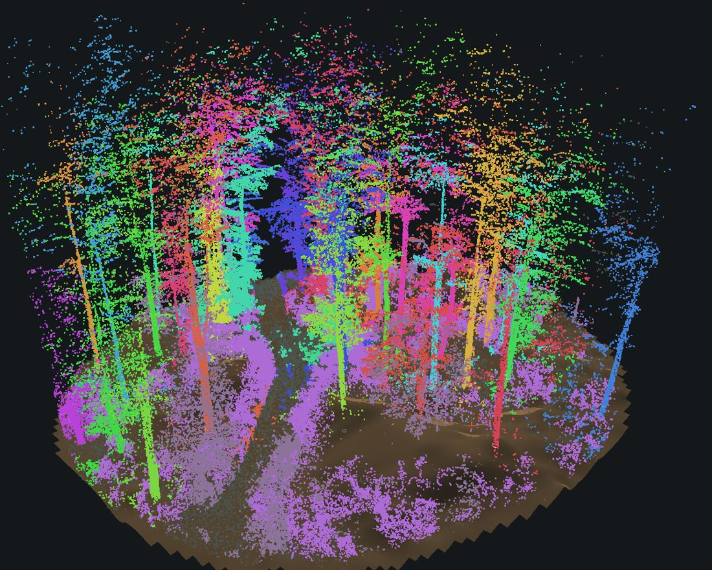
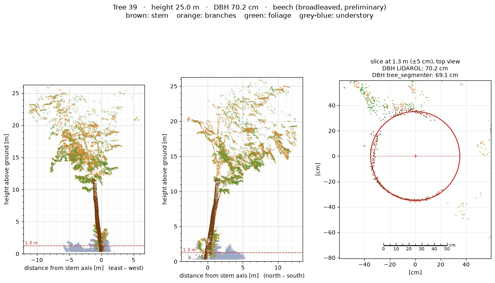

×


The same browser view the tool creates for every scan, here for a real forest plot (thinned to 250,000 points). Rotate with the left mouse button, pan with the right one, zoom with the wheel and click a tree to see its DBH, height and volume.
LidarTreeSegmenter is a Python tool I am developing to turn a terrestrial or mobile LiDAR scan of a forest plot (TLS, MLS, handheld SLAM) into tree-level inventory data. The idea is simple: drop a .laz / .las file onto the program and get, for every tree, its position, DBH, height and an estimate of timber volume, plus a plot-level summary.
The pipeline runs end to end. I first checked it on a synthetic plot where the true DBH and heights are known, and I am now running it on real scans of forest plots in Austria. The images and the 3D view on this page come from one of those real plots. The numbers are the tool's own output and have not yet been checked against field measurements.
No pre-trained machine-learning model or GPU is needed: the approach is mostly geometric (circle and cylinder fitting, neighbourhood graphs).

Mostly beech with some spruce. Species labels are preliminary.
.las / .laz point clouds